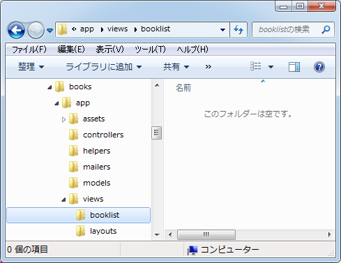
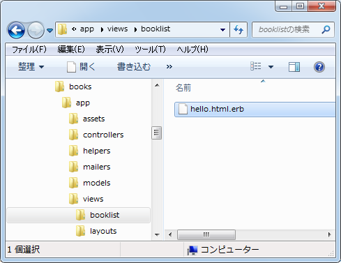
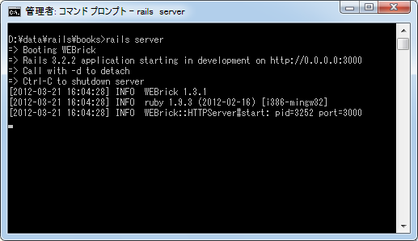
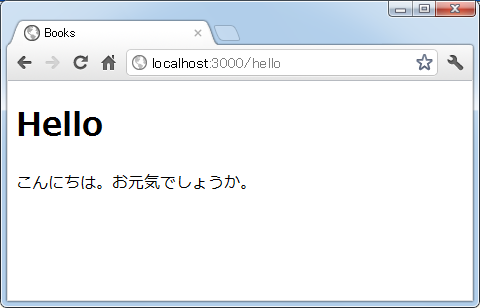
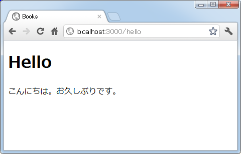

ビューの作成とデータの受け渡し
前回のサンプルでは利用者から呼び出されたアクションの中で直接利用者に結果を返していましたが、通常Railsサプリケーションの場合、アクションによって処理された結果を返す場合はビューを使います。ここではビューがどのような役割を持つものか簡単に解説し、実際に簡単なサンプルを作成してみます。
1.ビューの役割
2.テンプレートの作成
3.アクションからのテンプレートの呼び出し
4.動作確認
5.変数を使ったデータの受け渡し
※ ビューとテンプレートに関する詳細は「テンプレート(ビュー)とヘルパーメソッド」をご参照下さい。
ビューの役割
まずビューの役割を確認しておきます。アプリケーションに対して利用者からリクエストがあった場合、何らかの結果を返します。例えば「2011年に購入した本の一覧を教えて欲しい」というリクエストの場合、次のような結果が利用者に返されるのではないでしょうか。
<h1>お問い合わせ結果</h1> <p> 2011年に購入した本は次のとおりです。 </p> <ul> <li>2月13日 宇宙に行った日</li> <li>4月17日 数学者の生涯</li> </ul> <p> 以上です。 </p>
結果の出力をアクションの中で記述することも可能ですが、レイアウトや文面を変更する場合にアクションに記述されたプログラムを変更しなければなりません。
そこであらかじめ結果として返される文面をテンプレートとして作成しておき、アクションが処理したデータをテンプレートに埋め込み結果を返すようにします。このテンプレートの部分がビューとなります。今回の例ではアクションはデータベースなどから2011年に購入された本の日付と本のタイトルを調べ、その結果をテンプレートへ渡します。テンプレートではアクションから渡されたデータを使ってHTMLページを作成し、利用者へ返します。
アクションの部分はプログラマの方が作成しているけれど、画面出力の部分はデザイナーの方が作成されている場合も多いと思います。テンプレートを使用することで出力結果のレイアウトを変更したい場合などにテンプレートの変更だけで対応が可能となります。またプログラムの中でHTMLタグを出力するよりも、テンプレートとして作成した方が直感的に分かりやすくメンテナンスも楽です。
テンプレートの作成
ビューの役割を分かって頂いたところでビューの役割を行うテンプレートを作成してみます。コントローラを作成した時にアクションを同時に作成しなかった場合は手動でテンプレートを作成する必要があります。
テンプレートを作成する場所は決まっています。今回は「booklist」コントローラで作成したアクションに対するテンプレートですので、「app\views\booklist\」ディレクトリに作成します。

テンプレートファイル名は「(アクション名).html.erb」とします。今回は前のページで作成した「hello」アクションと「bye」アクションのうち、「hello」アクションに対するテンプレートを作成します。ファイル名は「hello.html.erb」となります。
テンプレートファイルは通常のWebページと同じようにHTML文を使って記述していきます。今回は次のように記述しました。
<h1>Hello</h1> <p> こんにちは。お元気ですか。 </p>
テンプレートファイルに記述された内容は利用者に返されブラウザ上で表示されることになるのですが、テンプレートファイルに記述するのはHTML文書の中の <body> から </body> の間に記述する部分だけで結構です。別のページで詳しく確認しますが、それ以外の部分は自動的に付与されます。
また保存する時の文字コードは UTF-8(BOM無) で保存して下さい。
実際にテンプレートファイルを作成し保存しました。

アクションからのテンプレートの呼び出し
テンプレートが作成できましたのでアクションから呼び出してみます。前のページのサンプルで「hello」アクションを次のように定義していました。
class BooklistController < ApplicationController
def hello
render :text => 'Hello!'
end
end
通常利用者へ結果を返すのは全ての処理が終わってからとなりますので、helloメソッドの最後に次のように記述してビューを呼び出します。(今回は事前の処理が無いので呼び出しだけとなっています)。
class BooklistController < ApplicationController
def hello
render "booklist/hello"
end
end
このように記述した場合はテンプレートとして「app\views\booklist\hello.html.erb」ファイルが呼び出されます。ただし、呼び出すビューが「app\views\コントローラ名\アクション名.html.erb」で作成されたファイルの場合は render メソッドを省略できます。その為、単に次のように記述することができます。
class BooklistController < ApplicationController def hello end end
この場合、アクションが呼び出されるとメソッド内の処理が順に行われた後で、最後にアクションに対応するテンプレートが呼び出されます。
では「app\controllers\booklist_controller.rb」ファイルの中身を上記のように書き換えました。
動作確認
それではRailsアプリケーションを起動してここまでの動作を確認してみます。コマンドプロンプトを起動し、起動させたいアプリケーションのルートディレクトリに移動して下さい。そして「rails server」と実行して下さい。

ブラウザから次のURLへアクセスして下さい。
http://localhost:3000/hello
設定されたルーティングに従い、「booklist」コントローラの「hello」アクションが呼び出され、最終的に対応するテンプレートが呼び出されて画面に次のように表示されます。

このようにテンプレートを利用して作成したHTML文書を利用者へ返しブラウザ上に表示させることができました。
変数を使ったデータの受け渡し
先程のサンプルではテンプレートに記載した内容がそのまま利用者へ返されていましたが、アプリケーションでは通常利用者からのリクエストに応じた結果を返すのが普通です。そのため、アクションで処理したデータをビューに受け渡し、ビュー側ではそのデータを利用して結果を出力する仕組みが用意されています。
データを受け渡しするには、まずアクションメソッドの中でインスタンス変数に対して値を格納します。すると呼び出されたビュー側でこのインスタンス変数を参照して値を利用することができます。
実際に試してみるため「hello」アクションメソッドを次のように書き換えます。
# coding: utf-8
class BooklistController < ApplicationController
def hello
@msg = 'こんにちは。お久しぶりです。';
end
end
※ Rubyのプログラムの中で日本語を使用する場合には、1行目に「# coding: utf-8」を記述した上で文字コードを UTF-8(BOM無) で保存して下さい。
インスタンス変数「msg」に値が設定されました。ではアクションに対応するテンプレートの「app\views\booklist\hello.html.erb」ファイルを次のように書き換えます。
<h1>Hello</h1>
<p>
<%= @msg %>
</p>
テンプレートでは <%=と %> または <%= と %>で囲まれた部分にはRuby言語を使ったプログラムを記述することができます。特に <%= と %> の間に変数などの式を記述するとその式が評価された値に置き換えられます。今回の場合であれば「<%= @msg %>」の部分が変数「msg」に格納されている「こんにちは。お久しぶりです。」に置き換えられて利用者には次のように返されます。
<h1>Hello</h1>
<p>
こんにちは。お久しぶりです。
</p>
このようにアクションからテンプレートに対しインスタント変数を介してデータを受け渡すことができます。
では実際にアクションとテンプレートを書き換えた上でブラウザから次のURLへアクセスして下さい。
http://localhost:3000/hello
画面に次のように表示され、アクションからテンプレートへデータが渡されていることが確認できます。

今回は利用者へ結果を返す際にテンプレートを利用する方法を試しました。次はモデルを使ってデータベースを利用する方法を確認します。
( Written by Tatsuo Ikura )

著者 / TATSUO IKURA
初心者～中級者の方を対象としたプログラミング方法や開発環境の構築の解説を行うサイトの運営を行っています。